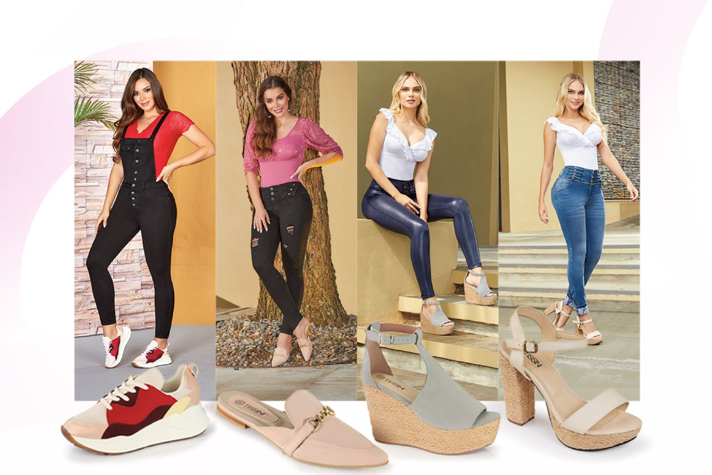

Te Presentamos Mi Closet: La Clave para una Imagen Impecable
Hemos creado una colección exclusiva de accesorios de vestir, diseñados meticulosamente para el profesional moderno que comprende que la excelencia reside en los detalles. Cada pieza está pensada no solo para adornar, sino para comunicar con propósito, elegancia y profesionalismo.

